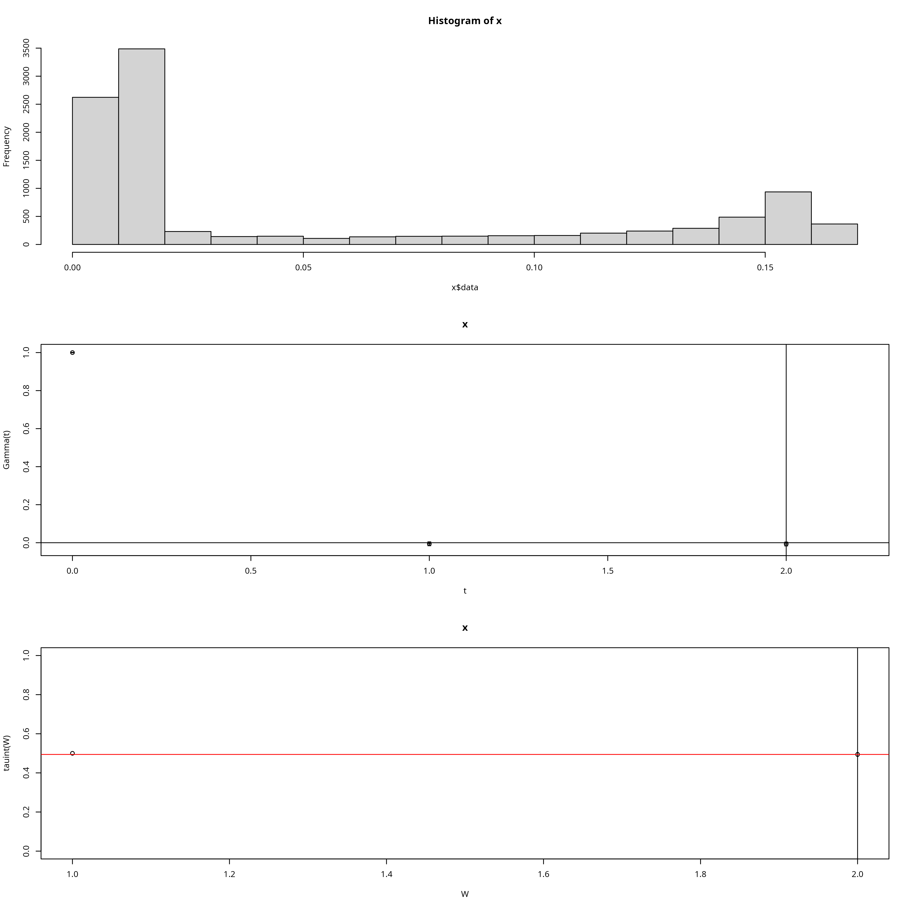
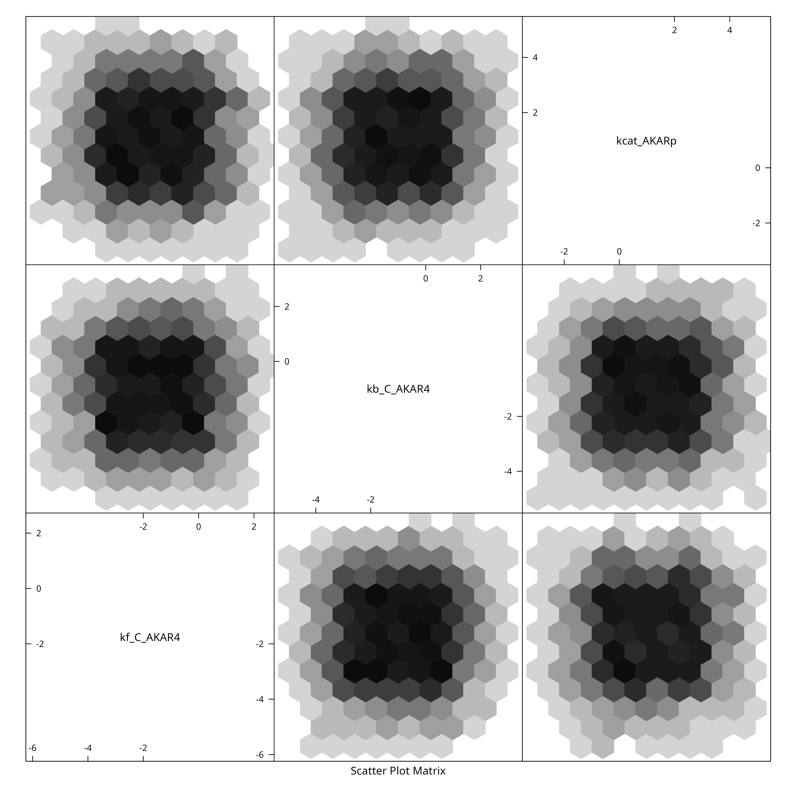
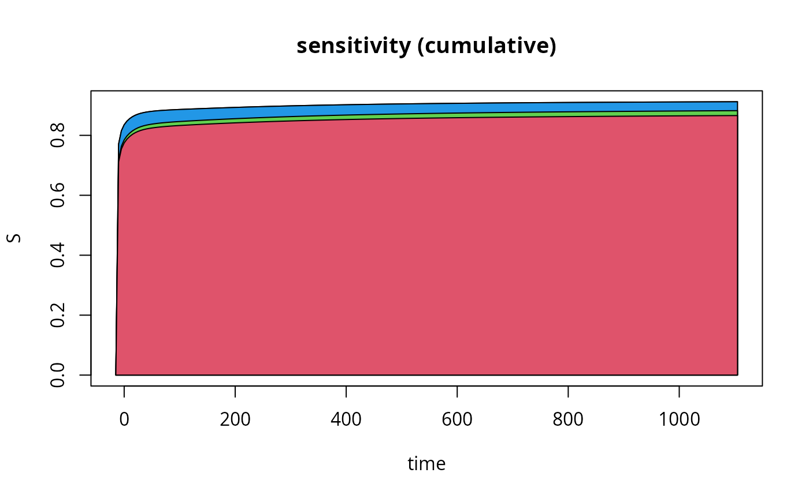

Sample deterministic AKAR4 with ABC
AKAR4.RmdWe load the model from a collection of TSV files
(inst/extdata/AKAR4 on github), the function below locates
the tsv files after package installation:
f <- uqsa_example("AKAR4")
m <- model_from_tsv(f)
o <- as_ode(m)
#> Loading required namespace: pracma
C <- generate_code(o)The model can exist in R and C form, in different files: -
/path/to/AKAR4.R - /path/to/AKAR4.c or
AKAR4_gvf.c
By default generate_code creates C code, it has a
language option.
The C file contains functions used for simulations with GSL solvers – odeiv2 module in the GNU Scientific Library. The uqsa package has interface functions that call GSL functions, but we don’t include the GSL library itself, ot has to be installed in the OS (system).
The functions in .R can be used more freely in R, and
are functionally identical (they describe the same model), but are
intended for use with deSolve, rather than our GSL interface
functions.
The C code needs to be written to a file and compiled to a shared library. On a fairly normal system, you can make the shared library manually, on the command line (if you want this).
In most cases, it is however better to let R make the shared library:
c_path(o) <- write_c_code(C) # or cat
#> Writing file: /tmp/Rtmp8JnRj0/adf9204aaf2748b8/AKAR4.c
so_path(o) <- shlib(o) # R CMD SHLIB
print(o)
#> Model name : AKAR4
#> C file : /tmp/Rtmp8JnRj0/adf9204aaf2748b8/AKAR4.c [2026-04-23 11:41:13.386485]
#> shared library : /tmp/Rtmp8JnRj0/adf9204aaf2748b8/AKAR4.so [2026-04-23 11:41:13.386485]
#> Number of state variables : 2
#> Number of parameters : 5
#> Number of outputs : 1
#> Conservation laws : 2
#> Transformations : noThe o variable (a list of ODE specific vectors), stores
the path to the different files. The C file can be inspected and
modified before making th eshared library. The code can also be written
with cat(C,sep="\n",...) to any file.
We want to sample in logarithmic space, so we set up a mapping
function parMap.
We distinguish between the Markov chain (sampling) variable, often written as \(\theta\), and the model’s natural parameters. Any relationship between the two can be encoded as a function:
\[ \text{parMap}: \theta -> \rho \]
where \(\rho\) are the parameters the ODE model expects.
The sampler will call this function on the sampling variable
parABC before it simulates the model (where
ABC indicates the sampling method we intend to use).
parMap <- function (parABC=0) {
return(10^parABC)
}The ODE model receives a parameter vector parMap(parABC)
for each experiment, this way we can sample in logarithmic sapce. It
consists of the biological model parameters (which are the same for all
experiments), and input parameters (which together with initial
conditions distinguish the experimental setups). This model doesn’t have
input parameters, so the biological and ODE parameters are the same.
Otherwise, two different kinds of parameters are concatenated into one
big numeric vector inside of the solver. The model function
AKAR4_default() returns the default values for
p.
Next, we load the list of experiments from the same list of
data.frames (SBtab content):
ex <- experiments(m,o)
stopifnot(all(m$Parameter$scale == "linear"))
parVal <- values(m$Parameter)
print(parVal)
#> kf_C_AKAR4 kb_C_AKAR4 kcat_AKARp
#> 0.018 0.106 10.200
#> attr(,"unit")
#> kf_C_AKAR4 kb_C_AKAR4 kcat_AKARp
#> "1/uM*s" "1/s" "1/s"Define lower and upper limits for log-uniform prior distribution for the parameters:
We define a function that measures the distance between experiment and simulation:
distanceMeasure <- function(funcSim, dataExpr, dataErr = NA){
stopifnot(is.matrix(funcSim))
stopifnot(is.matrix(dataExpr))
j <- match("AKAR4pOUT",rownames(dataExpr))
stopifnot(is.finite(j))
stopifnot(1 <= j && j <= NROW(dataExpr))
distance <- mean(((funcSim[j,]-dataExpr[j,])/max(dataExpr[j,],na.rm=TRUE))^2,na.rm=TRUE)
return(distance)
}If the data is very informative, then the difference between the
prior and posterior are large. In such cases, it may be difficult to
find the posterior through sampling. Dividing the data into chunks and
processing them sequentially can help. Our model of the posterior of
previous chunks is based on Copulas and the VineCopula
package.
We divide the workload into chunks and loop over the chunks, iterating the Bayesian problem via density estimation (VineCopula):
## work chunks
chunks <- list(
first=c(1,2), # then "fitCopula()"
second=3
)
dprior <- dUniformPrior(ll, ul)
rprior <- rUniformPrior(ll, ul)
options(mc.cores=detectCores())
start_time = Sys.time()
for (i in seq(length(chunks))){
simulate <- simulator.c(ex[chunks[[i]]],o,parMap=parMap,omit=3)
Obj <- makeObjective(ex[chunks[[i]]],simulate,distance=distanceMeasure)
prior <- rprior(10000)
Sigma <- cov(prior)
posterior <- ABCSMC(Obj,t(prior),dprior=dprior,Sigma=Sigma,delta=c(0.06,2))
if (i < length(chunks)){
COP <- fitCopula(posterior$draws)
rprior <- rCopulaPrior(COP)
dprior <- dCopulaPrior(COP)
}
}#> Loading required namespace: ks#> Time difference of 27.53098 minsWe plot the sample as a two dimensional histogram plot-matrix using the hexbin package:
colnames(posterior$draws)<-names(parVal)
#
if (require(hadron)){
par(mfrow=c(3,1))
ac <- hadron::uwerr(data=posterior$scores,pl=TRUE)
tau <- ceiling(ac$tauint+ac$dtauint)
i <- seq(1,NROW(posterior$draws),by=tau)
} else {
A <- acf(posterior$scores,lag.max=100)
l <- which(A$acf>0.2)
tau <- sum(A$acf[l])
i <- seq(1,NROW(posterior$draws),by=tau)
}
#> Loading required package: hadron
#>
#> Attaching package: 'hadron'
#> The following object is masked from 'package:base':
#>
#> kappa
if (require(hexbin)){
hexbin::hexplom(posterior$draws[i,],xbins=10)
} else {
pairs(posterior$draws[i,])
}
#> Loading required package: hexbin
A sensitivity plot using the results of the above loop:
where y[[1]] refers to the simulation corresponding to
the first experiment: experiment[[1]], and
$func refers to the output function values (rather than
state variables). The outout functions are defined in the table
SBtab$Output.
f<-aperm(y[[1]]$func[1,,]) # aperm makes the sample-index (3rd) the first index of f, default permutation
S<-gsa_binning(posterior$draws,f)
S[1,]<-0 # the first index of S is time, and initially sensitivity is 0
cuS<-t(apply(S,1,cumsum))
plot.new()
tm<-ex[[3]]$outputTimes
plot(tm,cuS[,3],type="l",xlab="time",ylab="S",main="sensitivity (cumulative)")
## this section makes a little sensitivity plot:
for (si in dim(S)[2]:1){
polygon(c(tm,rev(tm)),c(cuS[,si],numeric(length(tm))),col=si+1)
}